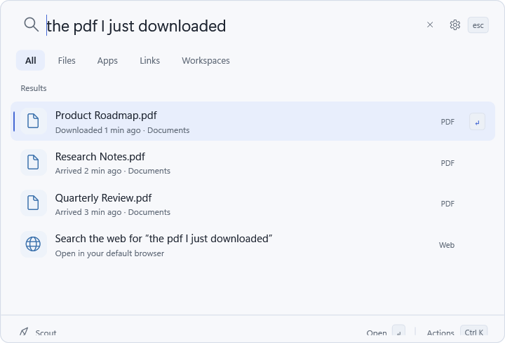
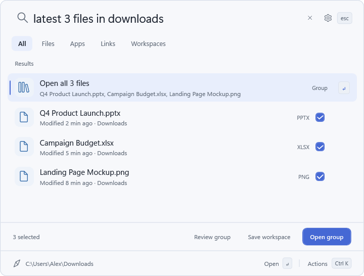

Search naturally
Find a file by name, type, folder, or when it arrived. Search apps and links from the same place.
A simpler way around your PC
Remember downloading a file, but not its name? Describe what happened. Scout brings the right result forward and helps you get back to work.

The essentials, in one place
Find a file by name, type, folder, or when it arrived. Search apps and links from the same place.
Preview a result, reveal it in its folder, or copy its path. You decide what opens.
Collect related results into a workspace and return to them when you need them.

A little more room to work
Ask for the latest three files in Downloads. Scout gathers the presentation, spreadsheet, and mockup into one group. Review them, open them together, or save the set as a workspace.
Made for your own computer
Your index, pins, workspaces, and launch history stay on your PC. Scout indexes file names and metadata, not the contents of your documents.
Browser history is optional. Include it only if you choose to in Settings.
Local AI is optional. Its runtime and model are separate downloads, and inference runs on your PC.
You choose the action. A search result never opens just because Scout suggested it.
Scout for Windows
Download the portable ZIP, extract it, and run Scout.exe. Use Ctrl + Alt + Space to open Scout from anywhere.
Download the beta Windows 11 x64 · Portable beta · SHA-256 checksum